방송통신기사 (2018-03-10 기출문제)
1과목: 디지털 전자회로
1. 60[Hz] 정현파 신호가 전파정류기에 입력될 경우 출력신호의 주파수는?
- 0[Hz]
- 30[Hz]
- 60[Hz]
- 120[Hz]
(정답률: 61%)

2. 다음 중 스위칭 정전압 회로에 대한 설명으로 틀린것은?
- 높은 효율을 갖는다.
- 제어소자의 스위칭 동작으로 대부분의 시간이 포화와 차단으로 동작한다.
- 고역통과필터를 사용한다.
- 펄스폭 변조기를 사용한다.
(정답률: 45%)
3. 베이스 접지 증폭회로에서 차단주파수가 50[MHz]인 트랜지스터를 이미터 접지로 했을 때의 차단주파수는 얼마인가? (단, β=99라 한다.)
- 100[kHz]
- 300[kHz]
- 500[kHz]
- 700[kHz]
(정답률: 47%)
4. 다음과 같은 궤환 증폭회로(부궤환)의 궤환 증폭도(Af)는?
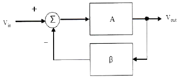
- 1 / 1-Aβ
- A / A + β
- 1 / 1 + Aβ
- 1 / A + Aβ
(정답률: 47%)
5. 어떤 차동증폭기의 차동이득이 1,000이고 동상이득이 0.1일 때, 이 증폭기의 동상신호제거비(CMRR) 값은?
- 10
- 100
- 1,000
- 10,000
(정답률: 42%)
6. 다음 회로의 종류는?
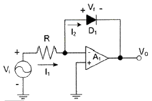
- 반파정류회로
- 전파정류회로
- 피크검출기
- 대수 증폭기회로
(정답률: 41%)
7. 증폭기와 정궤환 회로를 이용한 발진회로에서 증폭기의 이득을 A, 궤환율을 β라고 할 때, βA＞1이면 출력되는 파형은 어떤 현상이 발생하는가?
- 출력되는 파형의 진동이 서서히 사라진다.
- 출력되는 파형은 진폭에 클리핑이 일어난다.
- 지속적으로 안정적인 파형이 발생한다.
- 출력되는 파형은 서서히 진폭이 작아진다.
(정답률: 56%)
8. 다음 중 온도 특성이 좋고, 전원이나 부하의 변동에 대하여 비교적 안정도가 좋기 때문에 안정한 주파수의 발생원으로 많이 쓰이는 발진회로는?
- 빈 브리지형 발진회로
- 수정 발진회로
- RC 발진회로
- 이상형 발진회로
(정답률: 59%)
9. FM 변조에서 최대 주파수 편이가 80[kHz]일 때 주파수 변조파의 대역폭은 약 얼마인가?
- 40[kHz]
- 60[kHz]
- 80[kHz]
- 160[kHz]
(정답률: 55%)
10. FM 검파 방식 중 주파수 변화에 의한 전압 제어 발진기의 제어 신호를 이용하여 복조하는 방식은?
- 계수형 검파기
- PLL형 검파기
- 포스터-실리형 검파기
- 비 검파기
(정답률: 59%)
11. 다음 중 주파수 변조에 대한 설명으로 틀린것은?
- 협대역 FM과 광대역 FM방식이 있다.
- 변조신호에 따라 반송파의 주파수를 변화시킨다.
- 선형 변조방식이다.
- 반송파로는 cos 함수 또는 sin 함수와 같은 연속함수를 사용한다.
(정답률: 55%)
12. 다음 중 아날로그 신호를 디지털 신호로 변환할 때 양자화 잡음의 경감 대책이 아닌 것은?
- 압신기를 사용한다.
- 양자화 스텝수를 감소시킨다.
- 양자화 비트수를 증가시킨다.
- 비선형화 한다.
(정답률: 51%)
13. 다음 중 구형파를 발생시키는 발진기는?
- 수정발진기
- 멀티바이브레이터
- 플레이트동조발진기
- 다이네트론발진기
(정답률: 59%)
14. 다음 회로에서 Vi ＞ VB일 때, 회로의 출력 파형은 어느 것인가? (단, 다이오드의 VT 값은 무시한다.)
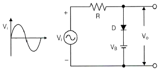
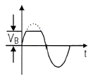
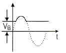
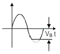
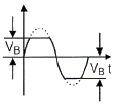
(정답률: 52%)
15. 다음 회로에서 Vcc=5[V]일 때 출력 전압은? (단, A=5[V], B=0[V], 다이오드의 VT=0[V]이다.)
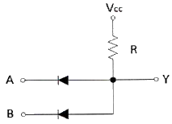
- 0[V]
- 2.5[V]
- 5[V]
- 7.5[V]
(정답률: 50%)
16. 다음 그림의 논리 회로에 대한 논리식은?
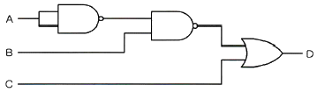
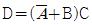
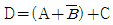
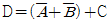
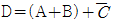
(정답률: 43%)
17. 그림의 회로에서 A=B=0이면 X1과 X2의 값은 각각 얼마인가?
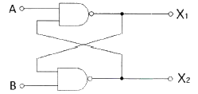
- X1=0, X2=0
- X1=0, X2=1
- X1=1, X2=0
- X1=1, X2=1
(정답률: 51%)
18. 플립플롭 6개로 구성된 계수기가 가질 수 있는 최대 2진 상태 수는?
- 16개
- 32개
- 64개
- 85개
(정답률: 58%)
19. 다음 중 전가산기(Full Adder)를 정확히 설명한 것은?
- 자리올림을 더하여 그 자리의 2진수의 덧셈을 완전히 하는 회로이다.
- 아랫자리의 자리올림을 더하여 홀수의 덧셈을 하는 회로이다.
- 아랫자리의 자리올림을 더하여 짝수의 덧셈을 하는 회로이다.
- 자리올림을 무시하고 일반 계산과 같이 덧셈하는 회로이다.
(정답률: 57%)
20. 다음 중 특정 비트의 값을 무조건 0으로 바꾸는 연산은?
- XOR 연산
- 선택적-세트(Selective-Set) 연산
- 선택적-보수(Selective-Complement) 연산
- 마스크(Mask) 연산
(정답률: 65%)
2과목: 방송통신 기기
21. 다음 중 방송에 사용될 영상소재를 컴퓨터 영상장치에 의하여 입력받아 스토리지(Storage)에 저장, 인코딩, 방송소재 검색, 미디어관리, 캡처 등의 기능을 수행하는 것은?
- Betacam System
- Master Control System
- ADC System
- Capture System
(정답률: 75%)
22. 임피던스가 25[Ω]인 반파장 안테나와 특성임피던스가 100[Ω]인 선로를 정합하기 위한 임피던스 값은?
- 150[Ω]
- 250[Ω]
- 25[Ω]
- 50[Ω]
(정답률: 79%)
23. 다음 스튜디오 설비 중 임계치 이하의 레벨은 통과시키지 않는 것은?
- 노이즈 게이트(Noise Gate)
- 익스팬더(Expander)
- 리미터(Limiter)
- 이퀄라이저(Equalizer)
(정답률: 62%)
24. 다음 중 야외 음악회와 같이 열린공간에서의 야간 중계시 최상의 영상 제작을 위한 유의사항으로 틀린 것은?
- Jimmy-Jib 카메라나 스테디캄으로 이용하는 EFP카메라는 와이드 렌즈를 사용하기 때문에 녹화 전에 Full-Focus를 조정해야 한다.
- 무대와 객석의 밝기 기준은 가능한 객석이 무대보다 밝지 않도록 카메라 아이리스(Iris)를 조정한다.
- 넓은 야외에서는 조명이 부족하므로 카메라 렌즈배율 사용을 자주하여 영상의 해상도를 높이도록 한다.
- 인물 샷을 중심으로 하는 카메라는 인물 색조와 밝기를 스코프와 모니터로 확인하여 수시로 적절하게 조정한다.
(정답률: 78%)
25. 우리나라에서 시행하는 디지털멀티미디어방송인 DMB(Digital Multimedia Broadcasting)의 사용 주파수 대역은?
- VHF-low, 54-88 [MHz]
- FM, 88-108 [MHz]
- VHF-high, 174-216 [MHz]
- UHF, 470-806 [MHz]
(정답률: 66%)
26. 다음 중 음향조정 설비(Audio Console)의 구성요소와 가장 거리가 먼 것은?
- 입력부분(Input section)
- 출력부분 선택 스위치
- 모니터계(Monitor Module)
- Compressor/Limiter
(정답률: 63%)
27. 다음 중 디지털 영상신호의 압축방법과 가장 거리가 먼 것은?
- 통계적 중복성 제거
- 공간적 중복성 제거
- 잡음 주파수 제거
- 시간적 중복성 제거
(정답률: 64%)
28. 다음 중 압축, 복원 표준화 규격이 맞지 않는 것은?
- 이동단말화상 : MPEG-4
- 정지화상(컬러) : JPEG(Joint Photographic Expert Group)
- 음성 및 동화상(컬러) : MPEG(Moving Picture Expert Group)
- 시청각 서비스를 위한 비디오 코덱 압축기법 : MHEG(Multimedia & Hypermedia Information Coding Expert Group)
(정답률: 59%)
29. 다음 보기 중에서 우리나라 디지털 TV 방송 표준의 규격으로 옳은 것은?
- 변조방식 : 8-VSB, 영상 : MPEG-2, 음성 : AC-3
- 변조방식 : 8-VSB, 영상 : MPEG-2, 음성 : AAC
- 변조방식 : 16-VSB, 영상 : MPEG-2, 음성 : AC-3
- 변조방식 : 16-VSB, 영상 : MPEG-2, 음성 : AAC
(정답률: 77%)
30. 다음 중 위성방송의 특성에 대한 설명으로 옳지 않은 것은?
- 넓은 범위의 방송구역 확보가 가능하다.
- 국가간, 대륙간 방송서비스 확보가 가능하다.
- 지구의 일식과 태양의 잡음의 영향을 받는다.
- 특정 주파수에서 강우에 영향을 받지 않는다.
(정답률: 80%)
31. 위성통신에서 사용되는 다중 접속 방식 중 지구국이 증가해도 회선 효율이 양호하고 통화회선마다 고유코드를 할당하여 전송함으로써 지구국 상호간에 혼신 없이 통신이 가능한 방식은?
- SDMA(Space Division Multiple Access)
- FDMA(Frequency Division Multiple Access)
- TDMA(Time Division Multiple Access)
- CDMA(Code Division Multiple Access)
(정답률: 82%)
32. 유선방송(CATV)의 전송분배계에서 사용되는 수동기기(passive element)가 아닌 것은?
- 연장증폭기
- 분배기
- 혼신방지기
- 보안기
(정답률: 47%)
33. CATV 시스템에서 분기 단자에 신호를 가했을 때 입력레벨과 간선의 출력단자에서 나오는 출력레벨과의 차에 의해 발생하는 손실은?
- 누화손실
- 결합손실
- 단자간 결합손실
- 역결합손실
(정답률: 76%)
34. CATV 전송로에 증폭 기능이 없는 4분배기를 연결하였을 때, 입력에 비해 출력 손실값은 몇 [dB] 감소하는가? (단, 단자 손실값은 제외한다.)
- -3.02[dB]
- -4.02[dB]
- -5.02[dB]
- -6.02[dB]
(정답률: 73%)
35. IPTV에 대한 설명 중 내용이 바르지 못한 것은?
- 브로드캐스트의 경우 네트워크의 이용 효율을 높일 수 있다.
- VOD 서비스의 경우 초기 투자비용의 증가 및 장비의 비효율성을 증가 시킨다.
- 브로드캐스트의 경우 네트워크에 항상 데이터가 존재하여 네트워크에 많은 트래픽을 발생시킨다.
- VOD 서비스의 경우 중복적인 데이터를 연속적으로 전송해야 하므로 네트워크와 서비스 장비의 효율성 또는 서비스 인원에 맞는 장비를 구축해야 한다.
(정답률: 52%)
36. 다음 중 지상파 DMB에 관련된 설명에 해당되는 것은?
- 256QAM 변조방식이다.
- 이동성이 강화된 방송미디어이다.
- Digital Mobile Broadcasting의 약자이다.
- 단일 캐리어 전송방식이다.
(정답률: 66%)
37. 다음 중 휘도신호와 색신호를 분리시켜 영상의 화질을 향상시키는데 사용되는 필터는?
- 밴드(Band) 필터
- 패스(Pass) 필터
- 콤브(Comb) 필터
- 저역필터
(정답률: 70%)
38. 다음 중 아날로그 영상 신호의 측정 항목에 따른 증상으로 옳은 것은?
- C/N비가 낮으면 대각선의 띠가 나타난다.
- CSO는 물결치는 비스듬한 줄무늬 현상이 발생한다.
- CTB는 SNOW 현상이 발생한다.
- 교차변조는 2~3개의 줄무늬 현상이 발생한다.
(정답률: 62%)
39. 외부 동기를 전혀 걸 수 없는 중계차, 위성, 가정용 아날로그 VTR 등에서 전송되는 영상신호를 스튜디오의 동기 신호 기준에 맞도록 강제적으로 일치시키는 장치를 무엇이라고 하는가?
- Video Switcher
- FS(Frame Synchronizer)
- DSK(Down Stream Keyer)
- SPG(Sync Pulse Generator)
(정답률: 76%)
40. Color의 위상각을 교정 또는 측정하는데 사용하는 계측기는?
- 벡터스코프
- 웨이브폼모니터
- 오실로스코프
- 전위차계
(정답률: 77%)
3과목: 방송미디어 공학
41. 다음 중 디지털 변조방식과 가장 거리가 먼것은?
- PM
- ASK
- FSK
- PSK
(정답률: 82%)
42. 뉴미디어가 보급되었을 때 이를 이용할 수 있는 계층과 그렇지 못한 계층 간의 간격이 커짐을 지적한 가설은?
- 정보격차가설
- 의제설정가설
- 제한효과가설
- 탄환이론
(정답률: 83%)
43. 다음 중 케이블 텔레비전의 특징으로 알맞은 것은?
- 지상파 방송을 수신할 수 없는 난시청 지역에서는 서비스가 안된다.
- 지상파 텔레비전에 비해 제공할 수 있는 채널의 수가 적다.
- 가입자의 의사전달이 안 되어 단방향 서비스만 가능하다.
- 시청가의 정보욕구를 충족시킬 수 있는 전문채널이 가능하다.
(정답률: 77%)
44. 믹싱에서 이펙트가 많이 사용되는데 이펙트를 음의 요소로 분류할 때 속하지 않는 것은?
- 주파수의 변화
- 진폭의 변화
- 시간축의 변화
- 위상의 변화
(정답률: 55%)
45. 잔향시간의 설명 중에서 틀린 것은?
- 음압 레벨이 60dB 감쇠되는 시간이다.
- 잔향 시간은 체적에 비례한다.
- 잔향시간은 흡음력에 반비례한다.
- 최적 잔향 시간은 음원과 관계가 없다.
(정답률: 77%)
46. ATSC TV방식에서 사용되는 변조방식과 1채널당의 대역폭을 옳게 나열한 것은?
- OFDM 방식/ 6[MHz]
- 8VSB 방식/ 6[MHz]
- OFDM 방식/ 7~8[MHz]
- 8VSB 방식/ 7~8[MHz]
(정답률: 73%)
47. 컬러TV 방송에서 색차신호 R-Y, B-Y, G-Y 3개를 보내지 않고 R-Y, B-Y 2개의 색차신호만 보내는 이유는 무엇인가?
- 2개의 색차신호 R-Y, B-Y로 색차신호 G-Y를 만들어 낼 수 있기 때문이다.
- 휘도신호와 호환성을 유지하기 위해서이다.
- 흑백 TV 수상기로도 컬러 TV 방송을 시청할 수 있도록 하기 위해서이다.
- 기존의 흑백 TV 주파수 대역내에 컬러 신호를 삽입하기 때문이다.
(정답률: 75%)
48. 조명으로 다양한 색상을 표현하기 위해 사용되는 컬러 필터의 종류 중에서 다른 보기의 필터들 보다 상대적으로 습기에 취약하고 찢어지기 쉬우나 색상이 다양하고 값이 저렴하여 많이 이용되었던 것은?
- 유리(Glass) 필터
- 플라스틱(Plastic) 필터
- 젤라틴(Gelatin) 필터
- 다이크로익(Dichroic) 필터
(정답률: 72%)
49. 다음 중 적절한 노출을 결정하기 위해 흑백에서의 연속적인 밝기 톤을 10단계의 표본으로 만들어 놓은 것을 지칭하는 용어는?
- 존 시스템(Zone System)
- 조명 제어 시스템(Lighting Control System)
- 컬러 시스템(Color System)
- F 넘버 시스템(F Number System)
(정답률: 74%)
50. 다음의 오디오 효과기의 기능 중에서 주파수 영역을 변화시키는 것은 무엇인가?
- Equalizer
- Limiter
- Digital Delay
- Compressor
(정답률: 77%)
51. 어떤 음을 듣고 있을 때 진폭이 큰 음이 가해지면 원래의 음이 들리지 않는 것을 무엇이라고 하는가?
- 마스킹 효과
- 바이노럴 효과
- 칵테일 파티 효과
- 하스 효과
(정답률: 81%)
52. 방송의 디지털화로 인한 현상과 가장 거리가 먼 것은 무엇인가?
- 다양화
- 저화질화
- 개인화
- 네트워크화
(정답률: 87%)
53. 다음 중 마이크에서 발생하는 험(Hum)을 방지하기 위한 방법이 아닌 것은?
- 마이크케이블과 전원선을 인접하여 나란히 포설하지 않는다.
- 평형의 출력을 가지는 마이크와 케이블을 이용하며, 콘솔에도 평형으로 연결한다.
- 가능한 높은 임피던스의 마이크를 사용한다.
- 차폐특성이 우수한 쉴드를 갖춘 케이블을 사용한다.
(정답률: 80%)
54. 다음의 문자열을 무손실 압축했을 경우 가능한 압축률은 얼마인가?
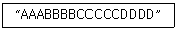
- 1/2
- 1/3
- 1/4
- 1/5
(정답률: 77%)
55. 전화망을 이용하여 데이터베이스(DB)를 갖춘 센터에 이용자가 희망하는 정보화면을 요구하면 문자나 도형정보가 TV화면에 나타나는 시스템은?
- 비디오텍스(Videotex)
- VAN(Value Added Network)
- ISDN(Integrated Service Digital Network)
- RBDS(Radio Broadcast Data System)
(정답률: 72%)
56. 다음 중 디지털TV방송 서비스의 데이터방송표준이 바르게 짝지어진 것은?
- 지상파방송 : CAM
- 위성방송 : ACAP
- 케이블방송 : OCAP
- 인터넷방송 : DVB-GEM
(정답률: 70%)
57. 아날로그TV의 문자다중방송(Teletext)에 대한 설명으로 적합하지 않은 것은?
- 문자나 그래픽의 영상정보를 TV신호의 수직귀선시간 중에 디지털신호로 다중하여 전송한다.
- TV화면을 통해 뉴스, 일기예보, 문화 등의 원하는 각종 서비스를 사용자가 선택해서 볼 수 없는 방송이다.
- 정보를 화면에 표시하는 방법은 TV화면과 동시에 나타내는 방법과 정보만 표시하는 방법이 있다.
- 문자다중방송이 채택 되지 않을 경우에는 방송국에서 영상신호와 정보를 중첩하여 전송할 수 없다.
(정답률: 60%)
58. 다음 중 음향 압축 파일의 종류에 속하지 않는 것은?
- FLAC
- MP3
- AC-3
- Real Audio
(정답률: 66%)
59. 주파수가 다른 복수의 대역신호로 분할하여 대역 신호마다 신호의 특성과 중요도에 따라서 부호화 방식이나 비트수 할당 등을 달리하여 부호화 하는 방식은 무엇인가?
- 허프만 코딩
- 해밍 코딩
- 서브밴드 코딩
- 변환 코딩
(정답률: 49%)
60. MPEG 영상 데이터의 계층을 낮은 층부터 올바르게 연결한 것은?
- Block - Macroblock - Slice - Picture
- Macroblock - Block - Slice - Picture
- Slice - Macroblock - Block - Picture
- Slice - Block - Macroblock - Picture
(정답률: 76%)
4과목: 방송통신 시스템
61. 다음 중 통신시스템의 구성요소로 옳지 않은 것은?
- 전송회선망
- 대체장치
- 단말장치
- 송출장치
(정답률: 69%)
62. 다음 문장과 같은 조건의 반송파 주파수는?
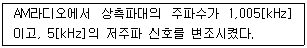
- 1,100[kHz]
- 1,0⑤[kHz]
- 1,000[kHz]
- 995[kHz]
(정답률: 73%)
63. 다음 중 주파수 변조에서 최대주파수편이가 75[kHz]이고 변조신호의 주파수가 15[kHz]일 경우에 FM 주파수의 대역폭으로 옳은 것은?
- 15[kHz]
- 75[kHz]
- 50[kHz]
- 180[kHz]
(정답률: 71%)
64. 다음 중 단파방송에 관한 설명으로 틀린 것은?
- 양측파대 진폭변조나 단측파대 진폭변조를 사용한다.
- E층, F층 등의 전리층 반사에 의해 원거리까지 퍼지는 특성을 가진다.
- 국제방송에서는 단파전용으로 6~30[MHz]를 사용한다.
- SSB방식 수신기가 DSB방식보다 우수하고, 수신기교체 비용도 저렴하다.
(정답률: 76%)
65. AM 슈퍼헤테로다인 수신기의 구성요소에 대한 설명으로 틀린 것은?
- 고조파 증폭부 - 수신기의 최저 수신가능 전파강도 결정
- 주파수 변환부 - 주파수 혼합회로와 국부발진회로로 구성
- 중간주파 증폭부 - 수신기 중간에서 다시 한번 변조하는 회로
- 검파부 - 중간주파의 입력신호에서 가청주파수의 원신호를분리
(정답률: 50%)
66. 다음 중 AM 표준방송에 대한 설명으로 틀린것은?
- 중파대 주파수를 사용한다.
- 진폭변조를 사용한다.
- FM에 비해 외래잡음에 강하고 다이나믹 레인지가 넓다.
- 수신기는 슈퍼헤테로다인 방식을 사용한다.
(정답률: 75%)
67. 다음 중 지상파 디지털방송(DTV) 시스템의 중계기 구성요소로서 변조기의 변조된 IF 신호를 중계기의 채널 주파수로 변환하여 파워앰프의 입력부까지 원하는 신호를 전송해주는 부분을 무엇이라 하는가?
- Exciter
- 왜곡보상부
- HPA
- Controller
(정답률: 74%)
68. 디지털 HDTV 방송시스템의 채널부호화 및 변조를 수행하는 것은?
- Source Coding
- Compression
- RF Transmission
- Demodulation
(정답률: 62%)
69. 다음 중 지상파 디지털 방식의 변조방식인 OFDM에 대한 설명으로 옳지 않은 것은?
- 스펙트럼 사용 효율이 높다.
- 심볼간 간섭에 강하다.
- 펄스 성형 필터가 불필요하다.
- 변조신호는 진폭이 가우시안 분포이므로 PAPR(Peak to Average Power Ratio)이 낮다.
(정답률: 58%)
70. CATV 동축케이블 내의 전자파 속도는? (단, εr=2.3(비투자율), μr=1(비유전율), ε0≒8.855×10-12[F/m], μ0=4π×10-7[H/m])
- 약 1.5×108[m/s]
- 약 2.0×108[m/s]
- 약 2.5×108[m/s]
- 약 3.0×108[m/s]
(정답률: 69%)
71. 텔레비전 송신설비 중 VHF 송신 안테나의 종류로 슬롯 안테나(Slot Antenna)계에 해당되는 것은?
- 야기 안테나
- 쌍루프 안테나
- 진행파형 안테너
- 다소자 ring antenna
(정답률: 50%)
72. 다음은 중계유선방송에서 사용 되고있는 용어를 설명한 것으로틀린 것은?
- “신호레벨”이라 함은 채널의 신호의 세기를 1[mV]를 기준으로 하여 데시벨로 나타낸 것을 말한다.
- “비트 방해비(D/U)"라 함은 방해신호에 대한 영상반송파의 비율을 데시벨로 나타낸 것을 말한다.
- “수신단자간 결합도”라 함은 수신단자에 전송되는 영상반송파가 다른 수신단자에 넘어 들어오는 비율을 데시벨로 나타낸 것을 말한다.
- 유선방송국설비 중 수신안테나 출력레벨은 안테나 후단에서, 나머지는 주 전송장치 후단에서 측정한다.
(정답률: 54%)
73. 다음은 서비스 지역에 따른 위성의 분류를 나타낸 것이다. 국제위성에 해당되지 않는 것은?
- INMARSAT
- INTELSAT
- INTERSPUTNIK
- PANAMSAT
(정답률: 61%)
74. 다음은 위성궤도의 종류별 위성고도를 나타낸 것이다. 틀린 것은?
- 저궤도 위성 : 약 300~1,500[km]
- 중궤도 위성 : 약 1,500~10,000[km]
- 타원형 고궤도 위성 : 약 10,000~40,000[km]
- 정지궤도 위성 : 약 40,000~50,000[km]
(정답률: 68%)
75. TV 방송은 방송기술 발전과 방송환경 변화 및 방송품질 향상에 따라 다양한 형태로 변화하여 왔다. 다음 중 TV 방송의 종류가 아닌 것은?
- CATV
- IPTV
- 3DTV
- MDTV
(정답률: 68%)
76. 지상파 DMB에서 사용하는 QPSK 변조방식은 하나의 부호에 몇 개의 비트가 할당되는가?
- 2
- 4
- 16
- 64
(정답률: 72%)
77. 지상파 DMB방송의 오디오신호 부호화에 대한 설명 중 옳은 것은?
- 오디오 신호의 대역은 20,300[kHz] 이하로 할 것
- 오디오 신호의 표본화 주파수는 최대 48,000[Hz]로 할 것
- 오디오 신호의 표본당 비트 수는 최대 28 이하일 것
- 오디오 신호의 표본당 비트 수는 최대 25 이하일 것
(정답률: 71%)
78. 다음 중 송신소 시스템 설계식 고려해야 할 기본조건으로 거리가 먼 것은?
- 전파의 특성상 TV, FM, 중파방송의 설계조건은 동일하게 적용한다.
- 자연재해의 영향이 적은 곳에 설치한다.
- 운용요원의 통근 및 거주가 용이한 곳에 설치한다.
- 전원선의 인입과 기기의 반입이 용이한 장소에 설치한다.
(정답률: 70%)
79. 다음 중 방송 제작장비에 대한 특성을 측정하고자 하는 경우 측정항목이 아닌 것은?
- 회절 특성
- 고조파 왜곡(THD)
- 신호대 잡음비(S/N)
- 주파수응답 특성
(정답률: 49%)
80. 오디오신호를 장거리 전송하는 경우, 외부 노이즈에 의한 신호훼손을 방지하기 위해 사용하는 평형신호 회선(Balanced Cable) 구성과 직접적인 관련성이 있는 것은?
- CCIR(International Radio Consultative Committee)
- PAPR(Peak-to-Average Power Ratio)
- PSRR(Power Supply Rejection Ratio)
- CMRR(Common Mode Rejection Ratio)
(정답률: 63%)
5과목: 전자계산기 일반 및 방송설비기준
81. 다음 중 CPU의 개입 없이 메모리와 주변장치 간에 데이터를 전송할 수 있는 것은?
- 인터럽트(Interrupt)
- 스풀링(Spooling)
- 버퍼링(Buffering)
- DMA(Direct Memory Access)
(정답률: 75%)
82. 다음 중 플립플롭(Flip-Flop) 회로를 사용하여 만들어진 메모리는?
- DRAM(Dynamic Random Access Memory)
- SRAM(Static Random Access Memory)
- ROM(Read Only Memory)
- BIOS(Basic Input Output System)
(정답률: 62%)
83. 10진수 -593을 10의 보수와 2의 보수로 옳게 표현한 것은? (단, 10의 보수는 5자리수, 양부호는 0, 음부호는 9로 표현하고, 2의 보수는 12비트, 양부호는 0, 음부호는 1로 표현한다.)
- 10의 보수 : 99406, 2의 보수 : 110110101110
- 10의 보수 : 99406, 2의 보수 : 110110101111
- 10의 보수 : 99407, 2의 보수 : 110110101110
- 10의 보수 : 99407, 2의 보수 : 110110101111
(정답률: 43%)
84. 다음 중 제일 먼저 삽입된 데이터가 제일 먼저 출력되는 파일구조는?
- 스택(Stack)
- 큐(Queue)
- 리스트(List)
- 트리(Tree)
(정답률: 71%)
85. 메모리관리에서 빈 공간을 관리하는 Free 리스트를 끝까지 탐색하여 요구되는 크기보다 더 크되, 그 차이가 제일 작은 노드를 찾아 할당해주는 방법은?
- 최초적합(First-Fit)
- 최적적합(Best-Fit)
- 최악적합(Worst-Fit)
- 최후적합(Last-Fit)
(정답률: 80%)
86. 다음 중 분산 처리 시스템에 대한 설명으로 틀린것은?
- 중앙집중형시스템 개념과는 반대되는 시스템이다.
- 한 업무를 여러 컴퓨터로 작업을 분담시킴으로써 처리량을 높일 수 있다.
- 보안성이 매우 높다.
- 업무량 증가에 따른 점진적인 확장이 용이하다.
(정답률: 80%)
87. 다음 중 기계어로 번역된 프로그램은?
- 목적 프로그램(Object Program)
- 원시 프로그램(Source Program)
- 컴파일러(Compiler)
- 로더(Loader)
(정답률: 50%)
88. 다음 중 오퍼레이팅 시스템에서 제어 프로그램에 속하는 것은?
- 데이터 관리프로그램
- 어셈블러
- 컴파일러
- 서브루틴
(정답률: 65%)
89. 다음 중 레지스터에 대한 설명으로 틀린 것은?
- 레지스터는 프로세서 내부에 위치한 저장소(Storage)이다.
- 누산기(Accumulator)는 레지스터의 일종이다.
- 특정한 주소를 지정하기 위한 레지스터를 상태(Status) 레지스터라 부른다.
- 레지스터는 실행과정에서 연산결과를 일시적으로 기억하는 회로이다.
(정답률: 55%)
90. 다음 설명으로 옳은 주소 지정방식은?
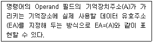
- 즉시 주소 지정방식
- 직접 주소 지정방식
- 변위 주소 지정방식
- 간접 주소 지정방식
(정답률: 52%)
91. 유선방송국에서 텔레비전 방송신호를 수신하기 위한 수신안테나, 케이블 및 증폭장치 등을 무엇이라 하는가?
- 증폭기
- 수신설비
- 전송로 선로설비
- 중계장치
(정답률: 69%)
92. 방송의 공적 책임과 관계가 없는 것은?
- 어떠한 규제나 간섭도 받지 않아야 한다.
- 지역간·세대간·계층간·성별간의 갈등을 조정하여서는 아니된다.
- 타인의 명예를 훼송하거나 권리를 침해하여서는 아니된다.
- 범죄 및 부도덕한 행위나 사행심을 조장하여서는 아니된다.
(정답률: 81%)
93. 다음 중 방송법의 목적에 해당되지 않는 것은?
- 방송의 자유와 독립보장
- 방송설비공사의 책임
- 시청자의 권익보호
- 민주적 여론 형성
(정답률: 49%)
94. 방송시설의 효율적 이용을 위하여 방송시설과 그에 부속된 토지·건물 등을 공동으로 구축·이용하도록 권고할 수 있는 기관은 어디인가?
- 문화체육관광부
- 국토교통부
- 과학기술정보통신부
- 교육과학기술부
(정답률: 64%)
95. 다음 중 정보통신공사업자 이외의 자가 시공할 수 있는 경미한 공사의 범위에 해당 되지 않는 것은?
- 정보통신용 전송로 설비공사
- 연면적 1000m2 이하의 건축물의 자가유선방송설비, 구내방송설비공사
- 간이무선국, 아마추어국 및 실험국의 무선설비공사
- 인입되는 국선이 5회선 이하인 건축물의 구내통신선로 설비공사
(정답률: 61%)
96. 유선방송신호를 전송하는데 필요한 전송선로 설비 중에서 입력 신호 에너지를 간선에서 지선으로 불균등하게 분리시키는 장치는?
- 중계기
- 분기기
- 분배기
- 증폭기
(정답률: 74%)
97. 전송·선로설비에 대한 기술기준의 적합여부 확인 등에 관하여 필요한 사항은 무엇으로 정하는가?
- 교육과학기술부령
- 행정안전부령
- 과학기술정보통신부 고시
- 문화체육관광부령
(정답률: 77%)
98. 유선방송국 설비 등에 관한 기술기준 중 전원설비에 대한 설명으로 가장 적합한 것은?
- 전원설비는 최대로 사용되는 때의 전력을 안정적으로 공급할 수 있는 용량을 가진 것으로서 전압, 전류의 변동 허용 범위는 ±1[%] 이내로 유지할 수 있는 것이어야 한다.
- 전원설비는 최대로 사용되는 때의 전력을 안정적으로 공급할 수 있는 용량을 가진 것으로서 전압, 전류의 변동 허용 범위는 ±10[%] 이내로 유지할 수 있는 것이어야 한다.
- 전원설비는 최대로 사용되는 때의 전력을 안정적으로 공급할 수 있는 용량을 가진 것으로서 전압, 전류의 변동 허용 범위는 ±20[%] 이내로 유지할 수 있는 것이어야 한다.
- 전원설비는 최대로 사용되는 때의 전력을 안정적으로 공급할 수 있는 용량을 가진 것으로서 전압, 전류의 변동 허용 범위는 ±30[%] 이내로 유지할 수 있는 것이어야 한다.
(정답률: 74%)
99. 유선방송국설비의 준공검사는 방송사업의 허가 또는 승인을 얻거나 등록을 한 날부터 얼마 이내에 받아야 하는가?
- 1월
- 3월
- 6월
- 1년
(정답률: 46%)
100. 종합유선방송국 설비에 접속하는 전송선로설비가 동축케이블인 경우의 분계점은?
- 진폭변조기와 동축케이블의 최초 접속점
- 진폭변조기와 광 송신기의 최초 접속점
- 주파수 변조기와 광 송신기의 최초 접속점
- 텔레비전 인코더와 광 송신기의 최초 접속점
(정답률: 60%)